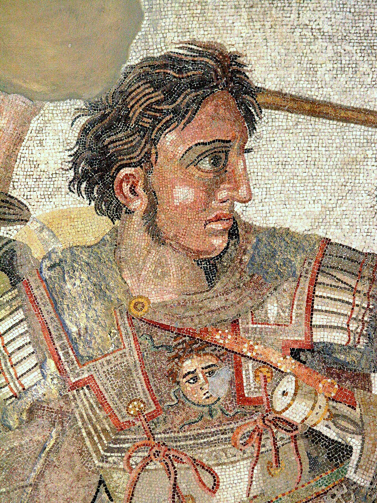

Hastalık ve Doğal Nedenler
Dünyayı Fetheden Hükümdar: Büyük İskender'in Babil'deki Ani Vefatı
Yazar: Azrail
•
28 Eylül 2026 23:37

Tuna Nehri'nden İndus Nehri'ne kadar uzanan bilinen dünyanın büyük kısmını fetheden Makedonya Kralı Büyük İskender, M.Ö. 323 yılının Haziran ayında Arabistan seferinin hazırlıkları için Babil Sarayı'nda bulunuyordu.
Komutanı Medius'un evinde verilen uzun bir ziyafetin ardından aniden şiddetli bir ateş ve karın ağrısı nöbetine yakalandı. Günler geçtikçe durumu kötüleşti; ateşi düşmedi ve konuşma yetisini kaybetti. Askerleri son bir kez krallarını görmek için yatağının önünden saygıyla geçtiğinde sadece gözleriyle selam verebiliyordu.
10 ya da 11 Haziran 323'te henüz 32 yaşındayken hayata veda etti. Kendisine imparatorluğunu kime bıraktığı sorulduğunda son fısıltısının 'En güçlü olana' olduğu söylenir. Ölüm sebebi sıtma, tifo, Batı Nil virüsü veya zehirlenme şüpheleriyle bugün halen tıp tarihçileri arasında tartışılmaktadır.